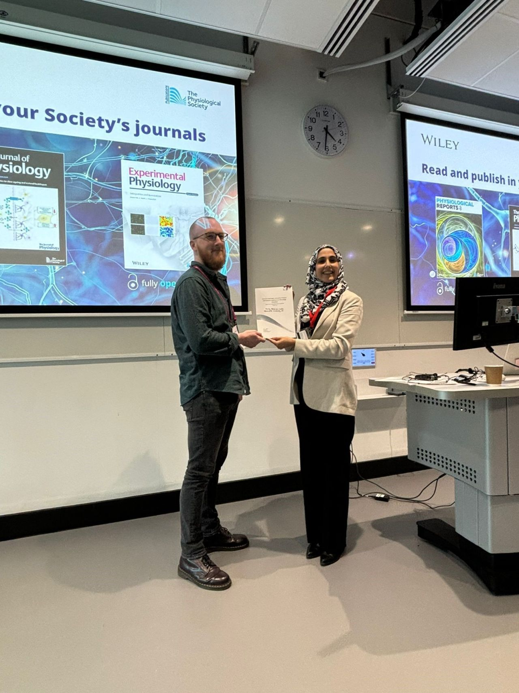
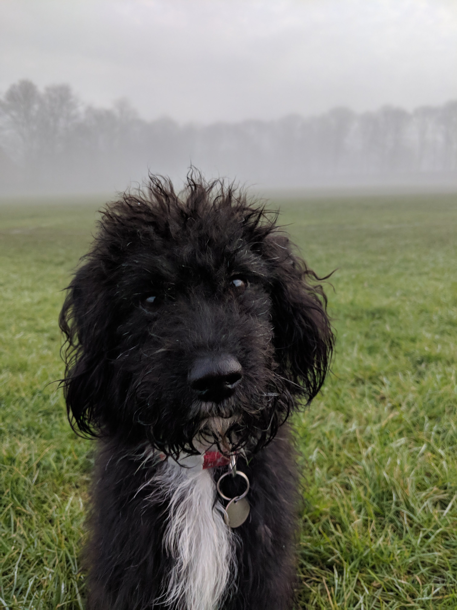

Who am I?
I'm a Lecturer in Biomedical Sciences at Newcastle University, but a physiologist back background. I'm also the Academic Lead for Employability and Phase 1 Curriculum Committee Chair in biomedical sciences at Newcastle, social media lead for the School of Biomedical, Nutritional and Sport Sciences, and Early Career Theme Lead for Education and Teaching for the Physiological Society. I teach across the degree programmes in the School, mainly in terms of physiology and first year practical skills for which I'm the module leader.
Before moving to Newcastle I was an undergraduate student in BSc Human Physiology, PhD student in computational cardiology, and Research Fellow in Cardiovascular Sciences at the University of Leeds. Research-wise I'm a computational cardiologist which basically means I write computer programs that simulate electrical activity in the heart, with a view to understand how diseases like heart failure contribute to arrhythmias, and how we can potentially treat them.
Outside of work I enjoy listening to music and going to gigs (mainly of the heavy metal variety), playing and watching rugby (I'm a Northampton Saints and England fan), and taking my dog Nessie (a cockapoo/lakeland terrier cross) out for adventuires including for coffees and beers (for me, not her).
Recent stuff
July 2024: Physiology in Focus - Northumbria University
Had the pleasure of being invited to contribute to the Sense of Belonging to Physiology symposium at Physiology in Focus 2024. A great opportunity to present our work on sense of belonging at Newcastle and hear from colleagues elsewhere. Pictured: conference dinner views at St James' Park.

April 2024: Runner up at PhySoc teaching conference in Salford
Had a great time at the Current Challenges, Innovative Practice and Student Experience in Physiology Education conference at the University of Salford. Managed to snag the runner up early career oral communication prize to boot after sharing our SciComm Summer Project work!
September 2023: Celebrating Physiology in Newcastle
Lovely event at Newcastle where the Physiological Society unveiled a blue plaque to honour Francis Arthur Bainbridge's contributions to physiology (the Bainbridge reflex). I even got the honour of contributing one of the research talks at the event, which was a late but welcome request! Available to watch at our Physiology at Newcastle University repository, for anyone interested.

Because I'm sure you're all wondering...
Here's Nessie. This is what a cockapoo/lakeland terrier cross looks like!